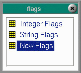

|
Flags are variables that control various aspects of the FortnaPlus© program. |
 |
FortnaPlus© uses Integer Flags as permanent variables to store information and as signals between the various program processes. The first 100 flags are common to all FortnaPlus© installations. The flags above 100 are specific to a particular installation.
FortnaPlus© uses String Flags as permanent variables to store information and as signals between the various program processes. The string flags are custom for projects.
New Flags Menu contains integer flags.
Copyright © 2001 Fortna Inc. All rights reserved.